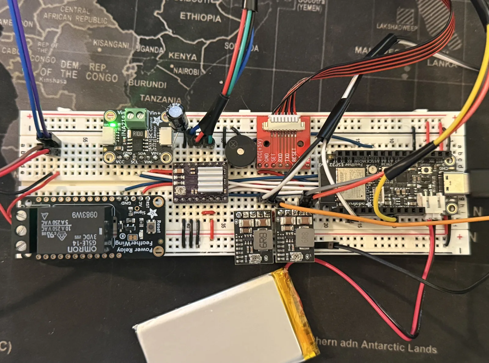
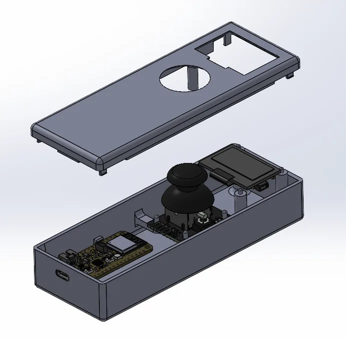
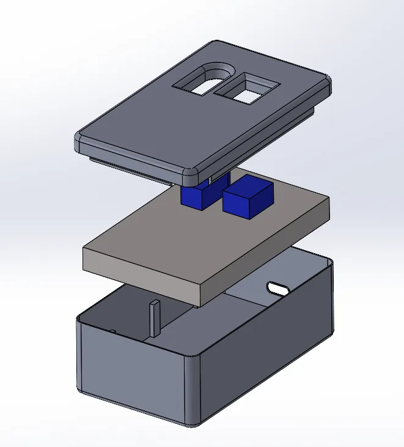
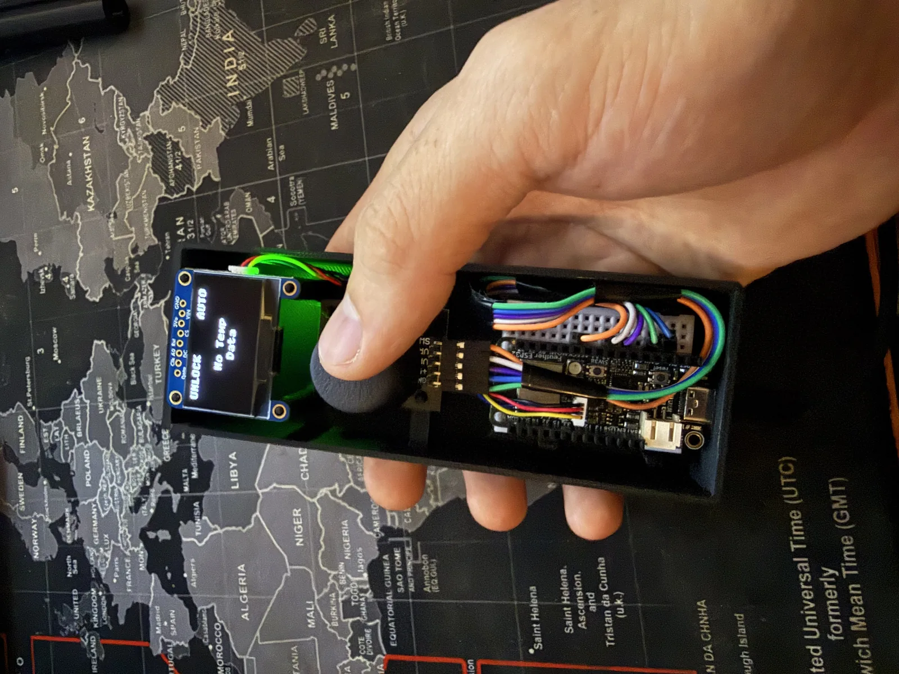

01Goals
- Design and build an autonomous smart window that integrates motorized actuation, locking, and PDLC tint control.
- Add sensing for temperature, smoke, and noise to automate comfort, safety, and privacy.
- Create custom control circuitry and enclosures for all the electronic components.
02Electronics
I designed the control circuitry to interface the ESP32 microcontrollers with the sensors, motors, and actuators, accounting for power distribution and signal requirements.


03Software
I programmed three microcontrollers in Python to run the system autonomously, including:
- Wi-Fi communication between the boards
- Distributed sensor data sharing across the three controllers
- Closed-loop control logic
04Enclosures
I modeled housings for the microcontrollers, sensors, and actuators in SolidWorks and fabricated them with 3D printing, designing for fit, mounting, wiring clearance, and access to the components.






05Results
- Delivered a fully autonomous window system that responds to environmental inputs without user intervention.
- Demonstrated end-to-end integration of mechanical design, electronics, and embedded software in a single functional prototype.